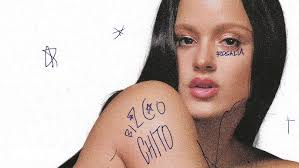

What is Pop Music?
Pop music, short for “popular music,” is a genre designed to be widely accessible and appealing to the masses. Characterized by catchy melodies, repetitive choruses, and polished production, pop constantly evolves, absorbing elements from various genres like dance, R&B, hip hop, and rock. While its sound may shift with each generation, its essence remains rooted in emotional connection, cultural trends, and universal appeal. Let's explore pop in three vibrant categories: English-language pop, Latin pop, and Spanish-language pop.
Pop in English
Taylor Swift
Taylor Swift is a global pop icon who started as a country singer and transitioned into pop with her 2014 album 1989. Known for her storytelling and reinvention, her most influential pop albums include:
- 1989 (hits: “Blank Space,” “Shake It Off”)
- Reputation (“...Ready for It?”, “Delicate”)
- Midnights (“Anti-Hero,” “Lavender Haze”)
Dua Lipa

British-Albanian singer Dua Lipa rose to fame with her sultry voice and retro-modern style. Her breakthrough came with:
- Dua Lipa (Deluxe) (“New Rules,” “IDGAF”)
- Future Nostalgia (“Don’t Start Now,” “Levitating”) – a disco-pop masterpiece.
Ariana Grande
Ariana’s powerhouse vocals and sleek R&B-infused pop have made her a mainstay in global charts. Key albums include:
- Eternal Sunshine (We can’t be friends)
- Sweetener & Thank U, Next (“No Tears Left to Cry,” “7 rings”)
- Positions (“34+35,” “pov”)
Latin Pop
Emilia
An Argentine singer-songwriter, Emilia blends pop with reggaeton and trap. Formerly part of the band Rombai, she rose as a solo artist with:
- ¿Tú Crees en Mí? (“Cuatro Veinte,” “Como Si No Importara”)
- .mp3, with songs like La_Original.mp3 or No_se_se.mp3
TINI

TINI, also from Argentina, began as a Disney star in Violetta and became a Latin pop sensation. Her albums include:
- TINI TINI TINI (“Miénteme,” “La Triple T”)
- Cupido (2023) with hits like “Cupido” and “Las Jordans”
Nicki Nicole

Nicki Nicole, another Argentine artist, is known for her unique mix of pop, trap, and R&B. Notable albums:
- Parte de Mí (“Colocao,” “Wapo Traketero”)
- Alma (2023) – a more introspective and mature sound
Pop in Spanish
Aitana
Aitana, from Spain, gained fame on Operación Triunfo and quickly became one of Spain’s leading pop voices. Top albums:
- Spoiler (“Vas a Quedarte”)
- 11 Razones (“Si no vas a volver”)
- Alpha (2023) – a turn toward electropop and dance
Lola Índigo

A singer and dancer, Lola Índigo fuses pop with urban and flamenco influences. Signature albums:
- Akelarre (“Mujer Bruja”)
- La Niña (“4 Besos,” “Santería”)
- El Dragón (2023) – a powerful, fiery reinvention
Rosalía

Rosalía has revolutionized modern Spanish music by blending flamenco with pop, trap, and experimental sounds. Key works include:
- El Mal Querer (“Malamente,” “Di mi nombre”)
- Motomami (“Saoko,” “Bizcochito”) – an avant-garde pop masterpiece
She’s now an international icon with bold, genre-defying artistry.